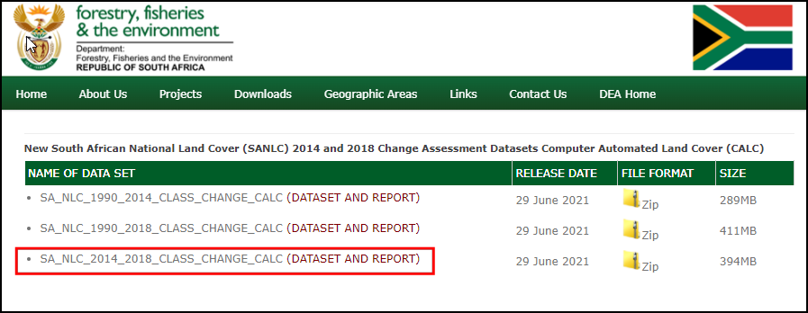
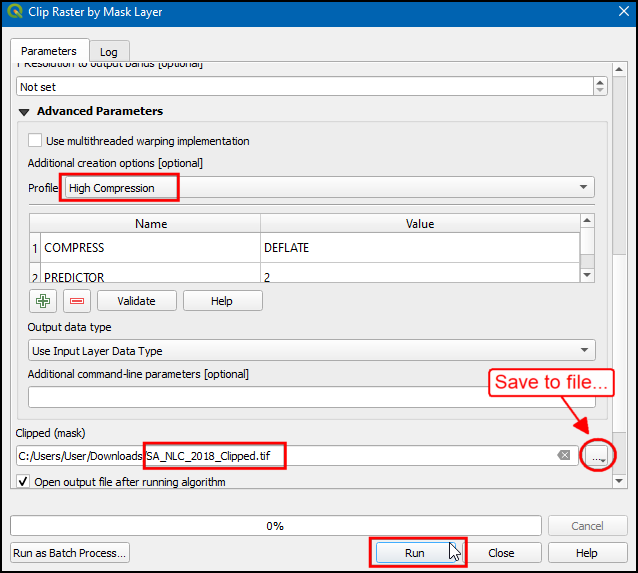
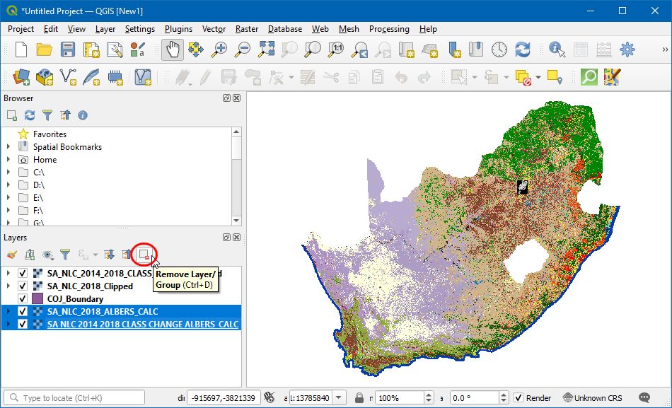
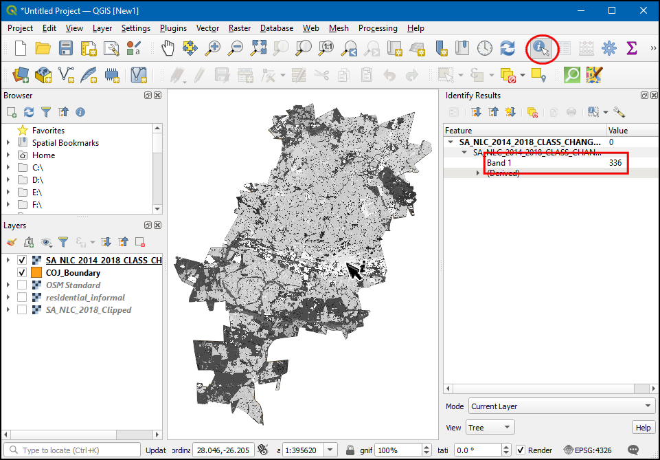
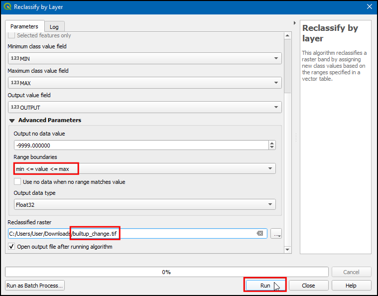
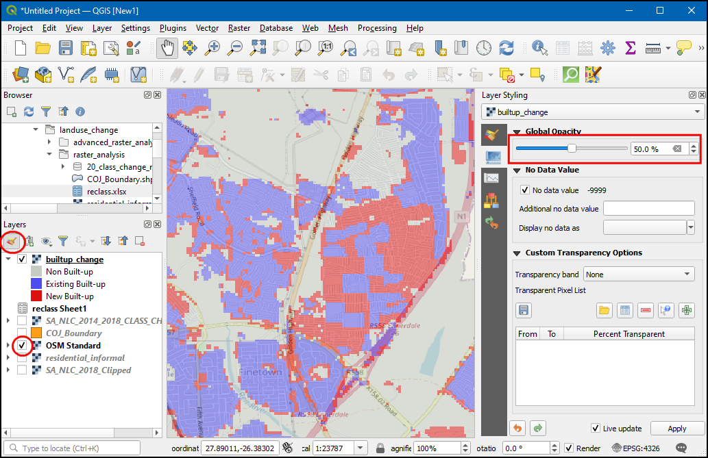

تجزیه و تحلیل شطرنجی پیشرفته (QGIS3)¶
در آموزش قبلی استایلسازی و تحلیل شطرنجی پایه (QGIS3) با اجرای جبر شطرنجی با Raster Calculator آشنا شدید. این آموزش مبتنی بر این تکنیک ها است و به شما نشان می دهد که چگونه از سایر ابزارهای تجزیه و تحلیل شطرنجی از جعبه ابزار پردازش استفاده کنید. شما یاد خواهید گرفت که چگونه با رسترهای پوشش زمین کاربری زمین (LULC) در QGIS پردازش کنید تا انواع خاصی از کلاس های پوشش زمین و تغییرات نقشه را استخراج کنید.
بررسی اجمالی کار¶
ما از مجموعه داده پوشش زمین ملی آفریقای جنوبی برای شناسایی و استخراج سکونتگاه های غیررسمی در شهر ژوهانسبورگ، آفریقای جنوبی استفاده خواهیم کرد. ما همچنین از مجموعه داده ارزیابی تغییر برای شناسایی الگوهای رشد شهری در شهر از سال 2014 تا 2018 استفاده خواهیم کرد.
مهارت های دیگری که یاد خواهید گرفت¶
نحوه بازپخش داده های شطرنجی به طرح ریزی دیگر.
نحوه بارگذاری فایل اکسل در QGIS
نحوه تنظیم شفافیت یک لایه شطرنجی در QGIS.
داده ها را دریافت کنید¶
مجموعه داده های زیر را برای این آموزش دانلود خواهیم کرد
The South African National Land Cover 2018 dataset: The new South African National Land-Cover 2018 dataset has been generated from 20 meter multi-seasonal Sentinel 2 satellite imagery and contains 73 landcover classes.
ارزیابیهای تغییر پوشش ملی آفریقای جنوبی 2018: این مجموعه داده تغییرات 20 طبقه پوشش زمین را از سال 2014 تا 2018 مقایسه میکند.
ارزیابیهای تغییر پوشش ملی آفریقای جنوبی 2018: این مجموعه تغییرات 20 سطح پوشش زمین را از سال 2014 تا 2018 مقایسه میکند.
«سیستم های اطلاعات جغرافیایی محیطی (E-GIS) <https://egis.environment.gov.za/>`_ دسترسی به داده های مکانی محیطی را برای آفریقای جنوبی فراهم می کند. ما رسترهای پوشش ملی آفریقای جنوبی (SANLC) را از این پورتال دانلود خواهیم کرد.
از صفحه «دانلود دادههای GIS <https://egis.environment.gov.za/gis_data_downloads>» دیدن کنید. برای پذیرش شرایط استفاده روی :guilabel:` موافقم کلیک کنید و ادامه دهید.

برای دانلود مجموعه داده باید یک حساب کاربری رایگان ایجاد کنید. روی :guilabel:'I want to create an account' کلیک کنید و دستورالعمل ها را برای ایجاد یک حساب دنبال کنید.

پس از ورود به سیستم، پوشش زمین ملی آفریقای جنوبی (SANLC) 2018 Computer Automated Land Cover (CALC) را جستجو کنید. این مجموعه داده در 2 پیش بینی مختلف ارائه شده است. برای این آموزش، مجموعه داده ALBERS را دانلود می کنیم. برای دانلود فایل «SA_NLC_2018_Albers_CALC_data.zip» روی آن کلیک کنید.

در مرحله بعد، «پوشش زمین ملی جدید آفریقای جنوبی (SANLC) 2014 و 2018 Change Assessment Datasets Computer Automated Land Cover (CALC)* را جستجو کنید و روی «SA_NLC_2014_2018_CLASS_CHANGE_CALC (DATASET AND REPORTSAGE_4LCAN201_CLASSET AND REPORTSGE_4LASS201_CHANGE_CALC» کلیک کنید. _CALC.tif.vat. فایل zip`.

شهر ژوهانسبورگ <https://www.joburg.org.za/>`_ مجموعه داده های فضایی را به عنوان بخشی از "چارچوب توسعه فضایی 2040 (SDF) برای ژوهانسبورگ منتشر می کند <https://www.joburg.org.za /documents_/Pages/Key%20Documents/policies/Development%20Planning%20 1%EF%BC%86%20Urban%20Management/Citywide%20Spatial%20Policies/Spatial-Development-Framework-2040.asp.x. شکل فایل مرزی را از این سایت دانلود خواهیم کرد.
روی لینک دانلود «http://bit.ly/joburg-sdf-16 <http://bit.ly/joburg-sdf-16>» کلیک کنید.

روی دایرکتوری
SDF Shapefilesکلیک کنید.

فایل "SDF Shapefiles.zip" را دانلود کنید و آن را در یک پوشه از حالت فشرده خارج کنید.

برای راحتی شما، یک نسخه بریده شده از لایه های مورد نیاز از لینک زیر موجود است:
SA_NLC_2014_2018_CLASS_CHANGE_ALBERS_CALC.tif <https://www.qgistutorials.com/downloads/SA_NLC_2014_2018_CLASS_CHANGE_ALBERS_CALC.tif>`_
روش¶
در مرورگر به پوشه دانلود شده و از حالت فشرده خارج شده بروید. آن را بزرگ کنید و «SA_NLC_2018_ALBERS_CALC.tif» را در بوم بکشید و رها کنید.

هنگامی که لایه بارگذاری شد، می توانید متوجه شوید که CRS به صورت :guilabel:`CRS ناشناخته در پایین سمت راست تنظیم می شود. روی آن دوبار کلیک کنید تا کادر محاوره ای :guilabel:`Project Properties - CRS باز شود.

در پایین، پیش نمایشی از وسعت طرح ریزی را مشاهده خواهید کرد. این CRS ناشناخته یک طرح مساحت مساوی لامبرت است که برای کشور آفریقای جنوبی تعریف شده است. ما بعداً این لایه را به پروجکشن دیگری دوباره طرح خواهیم کرد. روی OK کلیک کنید.

دو لایه دیگر «SA_NLC_2014_2018_CLASS_CHANGE_ALBERS_CALC.tif» و «COJ_Boundary» را بارگیری کنید. خواهید دید که لایه شطرنجی کل کشور را پوشش می دهد. برای تجزیه و تحلیل ما، ما فقط به منطقه تحت پوشش لایه "COJ_Boundary" علاقه مندیم. اکنون لایه شطرنجی را به این منطقه گیره می دهیم. به tool بروید. دوبار کلیک کنید تا باز شود.

در Clip Raster by Mask Layer, ``SA_NLC_2018_ALBERS_CALC` را به عنوان Input Layer و سپس
COJ_Boundaryرا به عنوان :guilabel:`Mask layer انتخاب کنید. ما همچنین گزینه ای برای بازپخش داده ها به طرح ریزی دیگر داریم. این یک تمرین خوب است که تمام لایه های داده خود را در یک طرح نگه دارید. ما رسترها را برای تطبیق CRS با لایه "COJ_Boundary" مجدداً طراحی خواهیم کرد. "EPSG:4326 - WGS 84" را به عنوان :guilabel:"Target CRS" انتخاب کنید.

فرمت پیش فرض داده خروجی GeoTiff است. فایل های GeoTiff اگر فشرده نباشند می توانند بسیار بزرگ شوند. یک روش خوب این است که همیشه هنگام ایجاد لایههای شطرنجی جدید، فشردهسازی بدون تلفات اعمال شود. :guilabel:'Parameters پیشرفته' را باز کنید و "High Compression" را به عنوان :guilabel:"Profile" انتخاب کنید. سپس، روی دکمه "..."" در کنار :guilabel:"Clipped (mask)" کلیک کنید و :guilabel:"Save to file..." را انتخاب کنید تا نام لایه را به عنوان "SA_NLC_2018_Clipped" وارد کنید. روی Run کلیک کنید.

پس از اتمام الگوریتم، پنجره را نبندید. ما همین عملیات را برای لایه شطرنجی دیگر اعمال خواهیم کرد. به برگه Parameters بروید و :guilabel:` لایه ورودی` را به
SA_NLC_2014_2018_CLASS_CHANGE_ALBERS_CALCتغییر دهید. همه گزینه های دیگر را حفظ کنید اما نام لایه خروجی را به "SA_NLC_2014_2018_CLASS_CHANGE_Clipped" تغییر دهید. روی Run کلیک کنید.

هر دو لایه بریده شده اکنون در بوم بارگذاری می شوند. لایه اصلی را انتخاب کنید و روی :guilabel:'Remove Layer' کلیک کنید تا آنها حذف شوند.

هر سه لایه باقیمانده اکنون در همان CRS هستند. اکنون می توانیم پروژه CRS را به CRS لایه ها تغییر دهیم. روی هر لایه بریده شده راست کلیک کرده و را انتخاب کنید.

اکنون پروژه CRS روی "EPSG:4326" تنظیم می شود. لایه SA_NLC_2018_Clipped را به بالا بیاورید.

روی «SA_NLC_2018_Clipped» کلیک کنید و از ابزار :guilabel:`identify در :guilabel:`Attributes Toolbar برای کلیک بر روی تصویر و بررسی مقادیر پیکسل استفاده کنید. خواهید دید که مقادیر پیکسل از 1 تا 73 متغیر است. این مقادیر یک کلاس کاربری / پوشش زمین متمایز را نشان می دهند.

کلاس های مجموعه داده در «SANLC 2018 Presentation» توضیح داده شده است، که می تواند از «پورتال EGIS <https://egis.environment.gov.za/sa_national_land_cover_datasets>» دانلود شود. برای این تمرین، ما به سکونتگاه های غیررسمی که با شماره های کلاس 51 تا 54 نشان داده شده اند، علاقه مندیم.

بیایید پیکسل های متعلق به این کلاس ها را استخراج کنیم. به بروید. برای باز کردن آن دوبار کلیک کنید.

تصویر منبع فقط 1 باند دارد. پسوند
@1شماره باند را نشان می دهد. عبارت زیر را برای انتخاب پیکسل ها از کلاس 51-54 وارد کنید.
"SA_NLC_2018_Clipped@1" >= 51 AND "SA_NLC_2018_Clipped@1" <= 54
به پایین بروید و روی دکمه «...» در کنار :guilabel: «لایه(های) مرجع» کلیک کنید. لایه "SA_NLC_2018_Clipped" را انتخاب کنید و روی :guilabel:"OK" کلیک کنید.

سپس، روی دکمه «...» در کنار :guilabel: «خروجی» کلیک کنید و :guilabel: «ذخیره در فایل...» را انتخاب کنید.

نام فایل خروجی را «residential_informal.tif» گذاشته و روی :guilabel:«Run» کلیک کنید.

پس از پایان فرآیند، یک لایه جدید به نام "residential_informal" به QGIS اضافه می شود. این لایه شطرنجی فقط مقادیر دو پیکسلی دارد - «1» که عبارت ما true را ارزیابی میکند و «0» در جایی که false بود. پیکسلهایی که سفید به نظر میرسند، آنهایی هستند که متعلق به کلاسهای سکونتگاه غیررسمی هستند. ما این لایه را بهتر استایل می کنیم تا بتوانیم سکونتگاه های غیررسمی را به وضوح ببینیم. روی دکمه :guilabel:'Open the layer styling panel' کلیک کنید.

لایه
residential_informalرا انتخاب کنید و رندر را به صورت :guilabel:`Paletted/Unique values تغییر دهید. روی دکمه :guilabel:'Add values manually' (+) کلیک کنید.

:guilabel:"Value" را به "1" تغییر دهید و "Residential Informal" را به عنوان :guilabel:"Label" وارد کنید. رنگ دلخواه خود را انتخاب کنید.

اکنون می توانیم تمام سکونتگاه های غیررسمی شهر ژوهانسبورگ را ببینیم. دیدن آنها در زمینه با یک نقشه پایه مفید خواهد بود. ما به انواع نقشه های پایه از افزونه QuickMapServices دسترسی داریم. پس از نصب افزونه، به مسیر :menuselection:`Web --> QuickMapServices --> OSM --> OSM Standard بروید تا لایه OpenStreetMap را اضافه کنید.

اکنون می توانید به راحتی شناسایی و بررسی کنید که آیا تحلیل ما به درستی سکونتگاه های غیررسمی را شناسایی کرده است یا خیر. میتوانید لایه «مسکونی_غیررسمی» را انتخاب کنید و به برگه Transparency در :guilabel: پانل سبکدهی لایهها بروید. میتوانید :guilabel:'Global Opacity' را کاهش دهید تا هم پیکسلهای استخراجشده و هم نقشه پایه را با هم ببینید.

اکنون بخش اول آموزش را تکمیل کرده اید. اکنون از لایه شطرنجی «SA_NLC_2014_2018_CHANGE_Clipped» برای شناسایی مناطقی که بین سالهای 2014 تا 2018 شهری شدهاند استفاده میکنیم. همه لایهها به جز «SA_NLC_2014_2018_CHANGE_Clipped» را خاموش کنید، سپس روی دکمه :guil pena» کلیک کنید. به برگه Transparency بروید و در Additional no data value، ``0` را وارد کنید. با این کار پیکسل های با مقدار 0 روی شفاف تنظیم می شوند.

از ابزار Identify در :guilabel:`Attributes Toolbar برای کلیک بر روی تصویر و بررسی مقادیر پیکسل استفاده کنید. خواهید دید که مقادیر پیکسل بین 21-420 متغیر است. هر مقدار انتقال از یکی از 73 کلاس منبع به کلاس دیگر را نشان می دهد.

دانلود داده های شما با صفحه گسترده ای به نام
lcccodes.xlsxارائه می شود. این برگه دارای یک برگه 03 urban_change_codes است که جزئیات بیشتری در مورد هر مقدار پیکسل ارائه می دهد. ما به تمام مقادیر پیکسلی که هر کلاس 2014 به کلاس ساخته شده 2018 تغییر کرده است علاقه مندیم. در تصویر زیر این موارد با رنگ آبی مشخص شده اند.

هدف ما ترسیم تغییرات در کلاس ساخته شده است. ما یک تبدیل روی لایه "SA_NLC_2014_2018_CHANGE_Clipped" اعمال می کنیم تا همه مقادیر پیکسل از مقادیر اصلی خود به یکی از مقادیر زیر نگاشت شوند.
|
همه پیکسل هایی که در سال 2014 و 2018 یک کلاس ساخته شده بودند |
|
همه پیکسل هایی که از یک کلاس غیر ساخته شده در سال 2014 به یک کلاس ساخته شده در سال 2018 تغییر کردند. |
|
تمام پیکسل های باقی مانده |
برای این کار باید جدولی ایجاد کنیم که این قوانین را مشخص کند. از آنجایی که QGIS قادر به خواندن مستقیم صفحات گسترده است، راحت ترین روش برای ایجاد این جدول است. صفحه گسترده ما باید 3 ستون، «MIN»، «MAX» و «OUTPUT» داشته باشد. هر ردیف باید محدوده ای از مقادیر شطرنجی ورودی باشد که باید یک مقدار خروجی به آن اختصاص داده شود. یک صفحه گسترده مطابق شکل زیر ایجاد کنید و آن را به عنوان «reclass.xlsx» در رایانه خود ذخیره کنید. همچنین می توانید یک نسخه آماده برای استفاده را از این لینک دانلود کنید - reclass.xlsx

فایل «reclass.xlsx» را در مرورگر پیدا کنید. آن را به پنجره اصلی بکشید و رها کنید.

یک لایه جدید
Sheet1به پنل Layers اضافه خواهد شد. روی آن کلیک راست کرده و :guilabel:'Open Attribute Table' را انتخاب کنید. بررسی کنید که برگه به درستی وارد شده است و 3 ستون به نامهای «MIN»، «MAX» و «OUTPUT» دارید. ابزار :menuselection:`Processing Toolbox --> Reclassify by layer را باز کنید.

در گفتگوی :guilabel:'Reclassify by layer'، "SA_NLC_2014_2018_CHANGE_Clipped" را به عنوان :guilabel:"لایه Raster" انتخاب کنید. "Sheet1" را به عنوان :guilabel:"لایه حاوی شکست های کلاس" انتخاب کنید. فیلدهای «MIN»، «MAX» و «OUTPUT» را برای فیلدهای مربوطه خود انتخاب کنید.

بخش Advanced Parameters را گسترش دهید. :guilabel:`مرزهای محدوده را به
min <= مقدار <= maxتغییر دهید. روی دکمه ... برای :guilabel:` طبقه بندی مجدد رستر کلیک کنید و نام فایل خروجی را به صورتbuiltup_change.tifوارد کنید. روی Run کلیک کنید.

پس از پایان پردازش، یک لایه جدید "builtup_change" با مقادیر پیکسل "0-2" به بوم اضافه می شود. در :guilabel:` پانل استایلسازی لایهها، «مقادیر پالتشده/یکتا» را انتخاب کنید، سپس روی «طبقهبندی» کلیک کنید.

رنگ دلخواه خود را برای هر دسته انتخاب کنید و مقادیر پیکسل "0"، "1" و "2" را به صورت "Non Built-up"، "Existing Built-up" برچسب گذاری کنید. و
ساخته شده جدید.

اکنون در برگه :guilabel:`Transparency، :guilabel:`Global Opacity را کاهش دهید و لایه "OSM Standard" را روشن کنید تا هم پیکسل هایbuildup_change و هم نقشه پایه را با هم ببینید.

If you want to give feedback or share your experience with this tutorial, please comment below. (requires GitHub account)